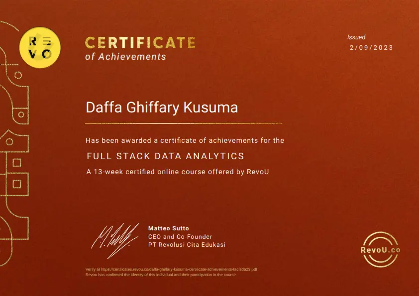
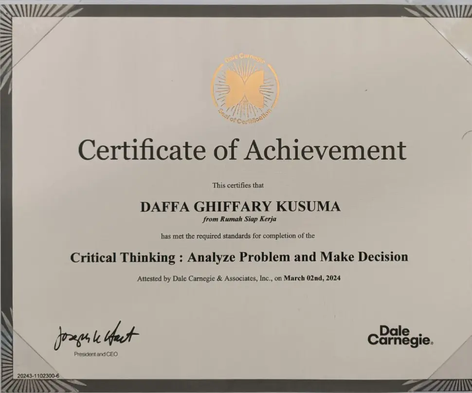
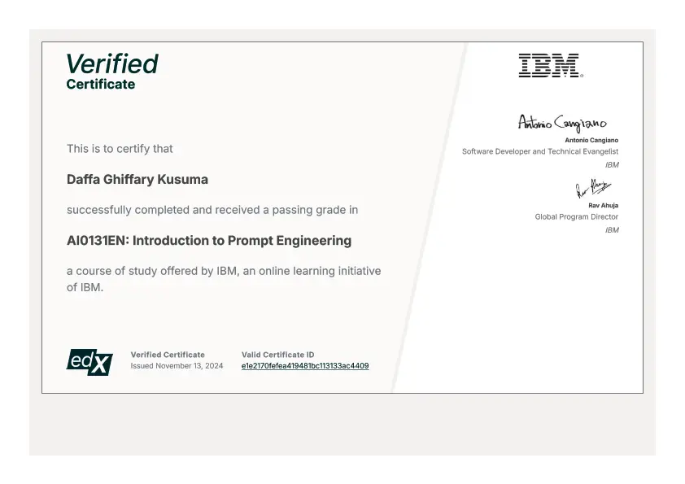

Administrative Communication Learning Program
Follow a 36-hour program through needs analysis, session planning, learning materials, and assessment tools.
Read case studyLearning & Instructional Design
I'm Daffa Ghiffary Kusuma. I design learning programs, materials, and assessments grounded in learner needs. Program management supports that work through delivery planning, coordination, and evaluation.
Start with these case studies, then explore the full portfolio.
Follow a 36-hour program through needs analysis, session planning, learning materials, and assessment tools.
Read case studyInspect needs analysis, competency architecture, budget models, and evaluation dashboards together.
Read case studySee how analysis of 5,000+ student records informed program evaluation and recommendations.
Read case studyI'm a psychology graduate working across learning design and program management. I connect learner needs with practical materials, assessments, and evaluation, supported by delivery planning and coordination.



Perspectives on learning design, training, and analysis from collaborators.
"Daffa is a strategic, data-driven expert who delivers exceptional results. His deep analysis ensures training programs are both impactful and tailored to our needs."
"Daffa merancang training kami dengan rapi, menyenangkan, dan tepat waktu. Materi yang dibawakan membuat tim langsung siap mengeksekusi."